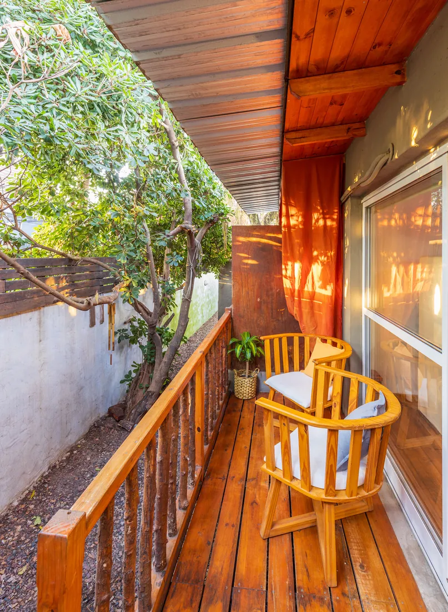
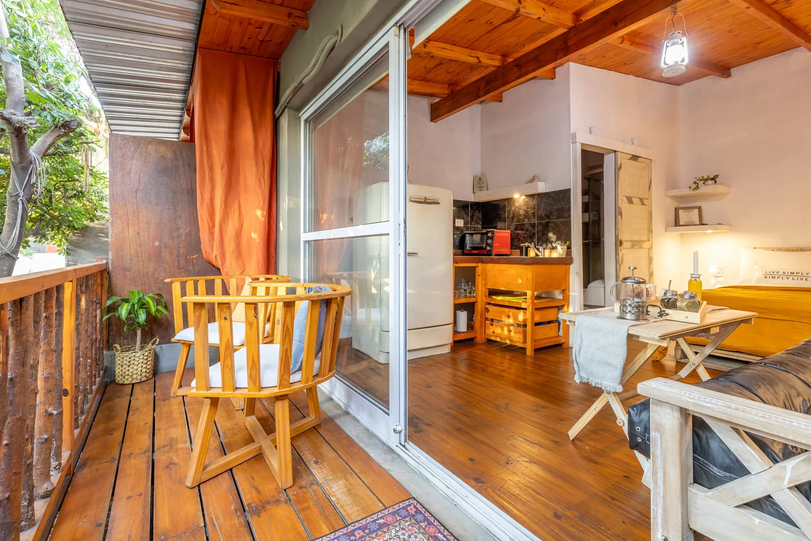
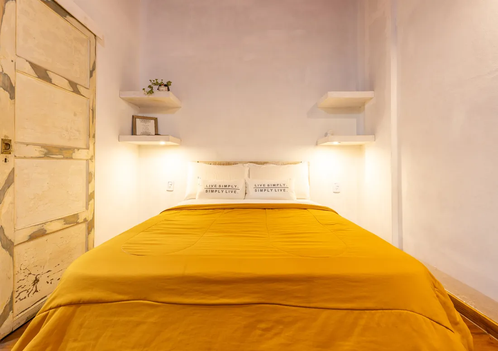
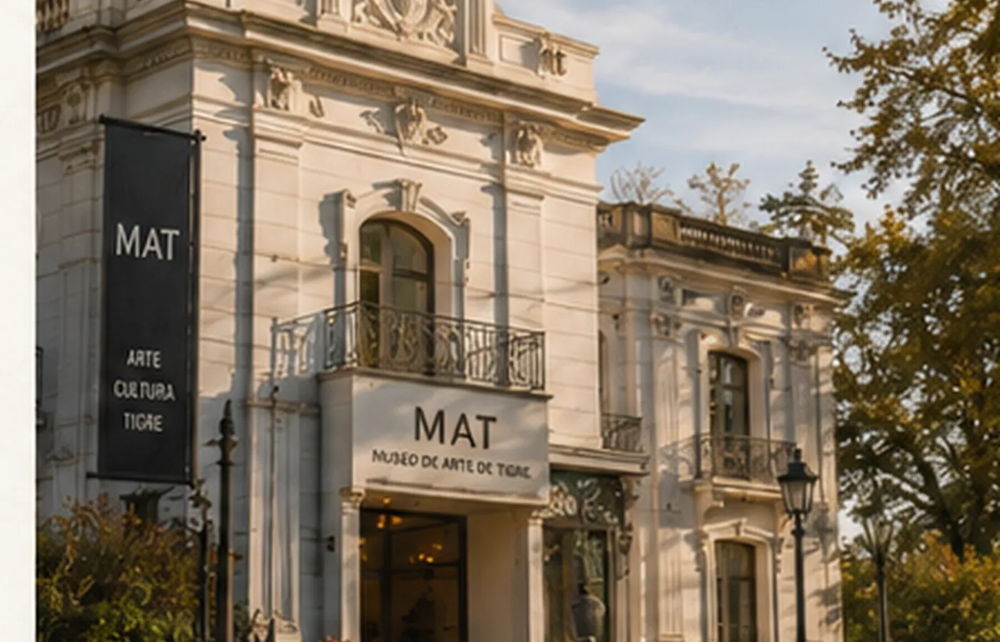
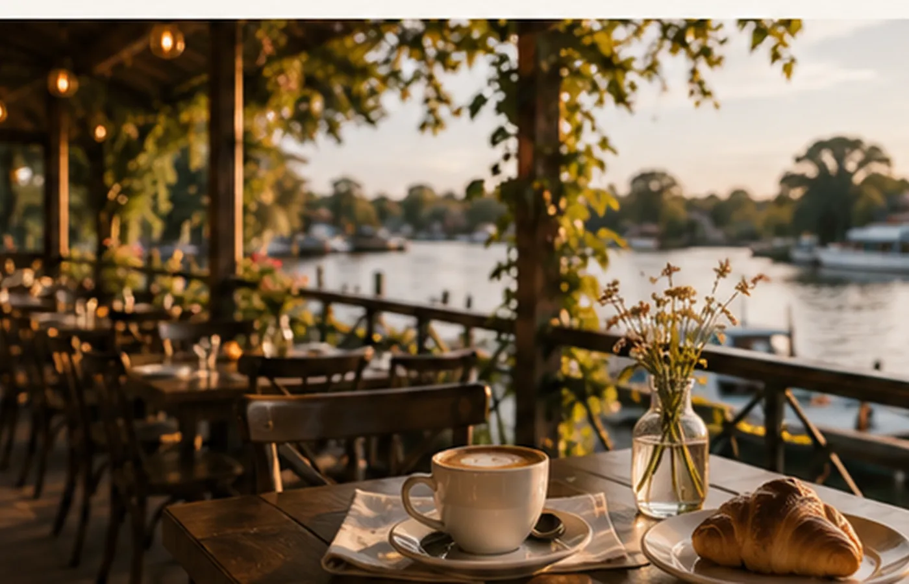
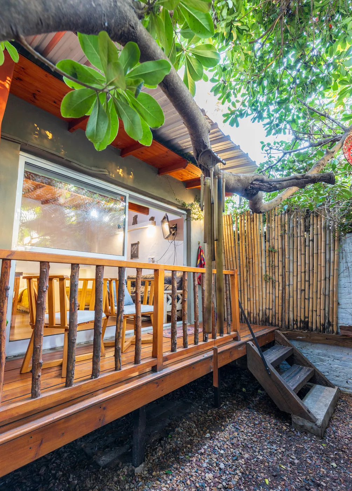
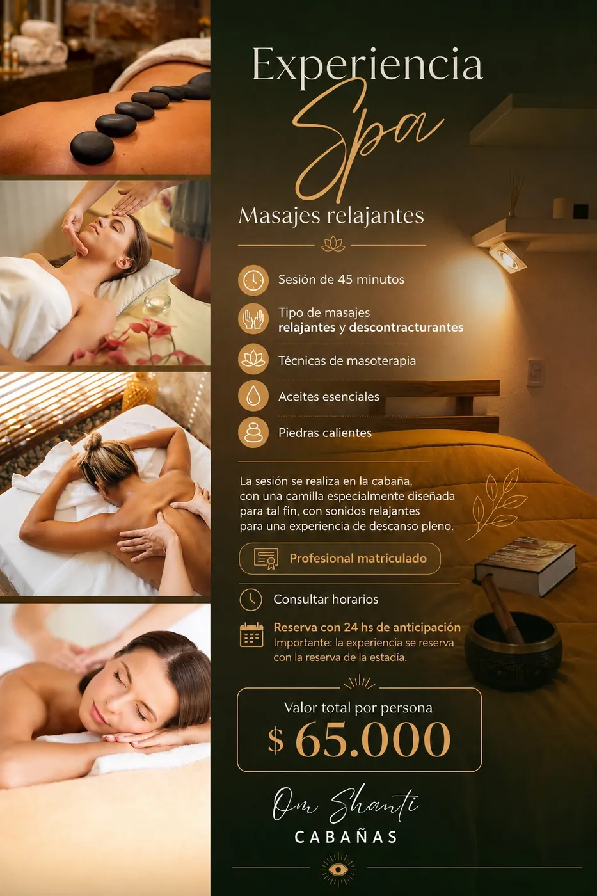
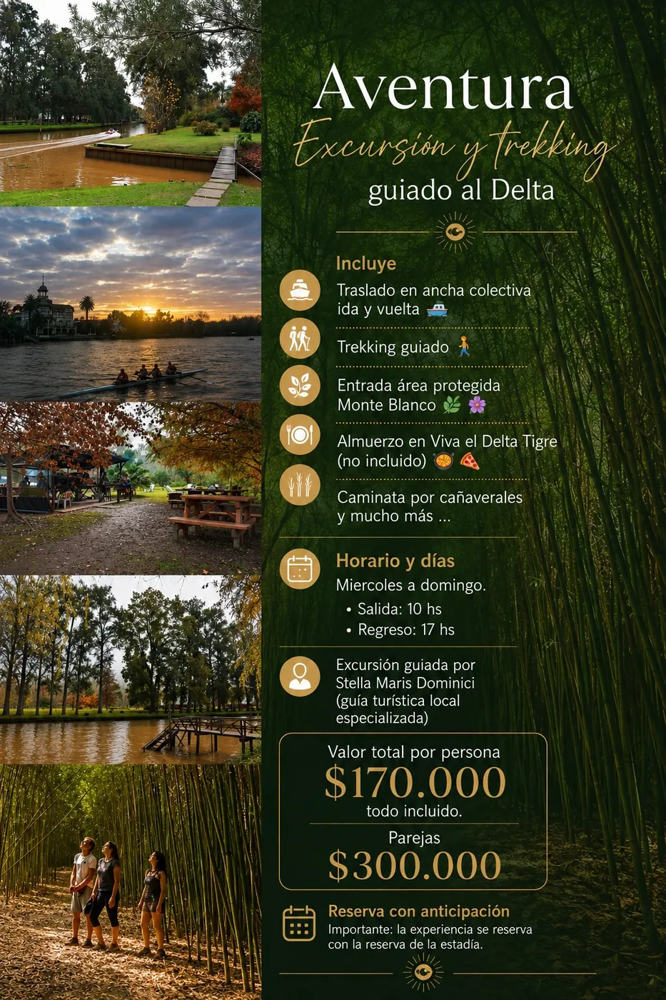

El deck
Un rincón para frenar y disfrutar sin apuro.
Cabañas para 2 a 4 huéspedes en Tigre centro, a 200 metros del río. Tranquilidad, comodidad y todo cerca.
Un espacio cálido, con deck y galería techada. Mirá sus rincones sin recorrer una galería interminable.

Un rincón para frenar y disfrutar sin apuro.

Cama doble, futón y un ambiente cómodo y funcional.

Un lugar para disfrutar incluso cuando llueve.

Un espacio pensado para bajar el ritmo.

Aire frío/calor, WiFi y Smart TV con Netflix.
Una escapada tranquila con los paseos y la gastronomía de Tigre a pocos pasos.

200 m de Paseo Victorica · 15 minutos caminando al Museo de Arte Tigre y al Puerto de Frutos.

Caminar frente al río, descubrir cafés y disfrutar el atardecer.

Arte e historia a pocos minutos de Om Shanti.

Bares y restaurantes para disfrutar sin alejarte.

Después de pasear, la tranquilidad te espera.
Consultá disponibilidad real y elegí tus fechas en nuestro motor de reservas.
Spa, aventura y recorridos por Tigre. Opciones adicionales sujetas a disponibilidad.


Excursión y trekking guiado para conectar con la naturaleza.
Consultar experiencia ↗
Conocé el espíritu de Om Shanti y cómo nació este proyecto.
Sí. Para una noche con ingreso viernes, sábado o domingo, el sistema ofrece la modalidad con late checkout según disponibilidad.
Con una seña del 50% por transferencia.
Sí, Om Shanti es pet friendly.
Se puede estacionar en la calle; no contamos con cochera privada.